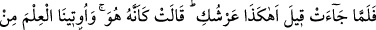
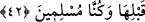

herhangi bir yolla tahtın durumunu ve şeklini değiştirin.
Bunun üzerine şeytanlar, onun altını üstüne getirdiler, üzerine öncekilerden daha hoş
başka kubbeler binâ ettiler. Kırmızı mücevherin yerini yeşille, yeşil mücevherin yerini
de kırmızı ile değiştirdiler.
“Bakalım tanıyacak” da aklının üstünlüğü ortaya çıkacak “mı, yoksa
tanıyamayanlar arasında mı olacak.” Böylece de aklının zayıflığı belli olacak.
Çünkü Belkıs’ın annesi cinlerden olduğu için şeytanlar sırlarının Belkıs tarafından
Süleyman (a.s.)’a ifşâ edilmesinden korkuyorlardı. Süleyman (a.s.) onunla evlenir de;
cin ve insan arası bir de çocukları doğarsa, mülke o varis olur; böylece şeytanlar
Süleyman (a.s.)’ın hükümranlığından sonra daha şiddetli ve korkunç bir hükümranlıkla
karşı karşıya kalmaktan, emre âmâde olmaktan kurtulamamaktan, ebediyen çalışmak ve
yorulmak zorunda olmaktan çekiniyorlardı. Bu yüzden Süleyman (a.s.)’ı Belkıs’tan
nefret ettirmeye çalıştılar ve: “Onun aklında kusur ve noksanlık var, bacakları kıllı,
ayakları merkebin tırnakları gibi.” dediler. Bunun üzerine Süleyman (a.s.) onun aklını
sınamak istedi ve tahtının tanınamayacak hale getirilmesini emretti. Bacaklarını ve
ayaklarını tanımak için de -aşağıda geleceği gibi- bir köşk yaptırdı.
42. Melike gelince: “Senin tahtın da böyle mi?” dendi. O şöyle cevap verdi:
“Tıpkı o! Bize daha önce (Allah’tan) bilgi verilmiş ve biz müslüman olmuştuk.”
“Melike gelince:” Belkıs Süleyman (a.s.)’ın yanına vardığında taht onun önündeydi.
Belkıs tahtı görünce bizzat Süleyman (a.s.) tarafından ya da başkası vâsıtasıyla
Belkıs’ın aklını sınamak için ona: “Senin tahtın da böyle mi?” bunun gibi mi?
“dendi.” Ona telkin olmaması, dolayısıyla tahtın tanınmaz hale getirilmesi emrinin
gayesi olan Belkıs’ın aklını sınama imkanının elden gitmemesi için “Bu senin tahtın
mı?” demedi.
“O şöyle cevap verdi:” Yâni ne “hayır”, ne de “evet” dedi. Onlar kendisini şüpheye
düşürdükleri gibi o da işin aslını anladığı halde onları şüpheye düşürdü ve şöyle dedi:
“Tıpkı o!” Sanki bu o!
Tahtın kendisi aynı kalmakla beraber özelliklerinin değiştirilmesiyle tanınmaz hale
getirildiğini îmâ etti. Böylece Süleyman (a.s.) bununla onun aklının tam olduğu sonucuna
vardı. Sanki Belkıs da Süleyman (a.s.)’ın böyle yaparak kendisinin aklını sınamak ve
ona mûcize göstermek istediğini tahmin etti ve şöyle dedi: “Bize” Allah’ın kudretinin
kemâli ve senin peygamberliğinin doğruluğu hakkında “daha önce” yâni gördüğümüz
bu tahtın getirilmesi mûcizesinden önce Münzir b. Amr’dan işittiklerimizden ve bu
hususa delâlet eden âyetler/mûcizeler vâsıtasıyla “bilgi verilmiş ve biz” o vakitten beri